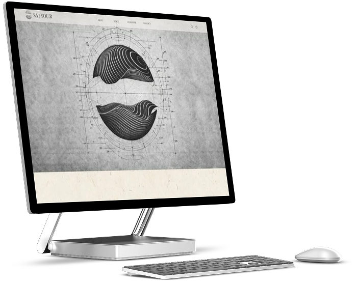
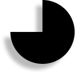

PROGRAM :
웹사이트 작업물
“한국 전통미와 현대적 공간 해석을 결합한 브랜드 반응형 웹사이트입니다.”
• SA : YOU.R
SA : YOU.R는 사유의 공간이라는 컨셉을 중심으로
전통 소재와 현대적 레이아웃을 결합하여 제작한 반응형 웹사이트입니다.
브랜드의 세련되고 트랜디한 분위기와 고급스러운 이미지를 전달하도록 구성했습니다.
전통 소재와 현대적 레이아웃을 결합하여 제작한 반응형 웹사이트입니다.
브랜드의 세련되고 트랜디한 분위기와 고급스러운 이미지를 전달하도록 구성했습니다.


사이트바로가기